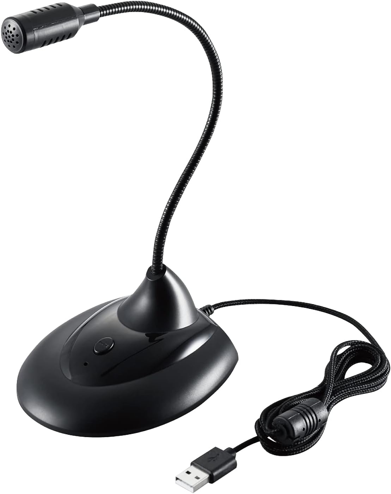
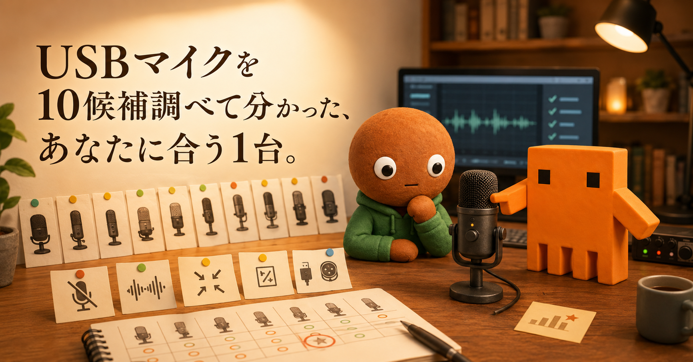
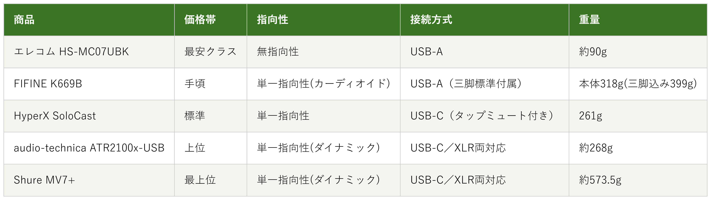

Amazonで見るWeb会議で「声がこもって聞こえます」と言われたことがある人へ
その声、
ちゃんと届いてる？
Web会議・配信向けのUSBマイク10候補を調査。指向性・接続方式から、選び方の違う5商品を比較しました。
自分に合うUSBマイクを探す
この記事はAmazonアソシエイト・プログラムの参加者として、紹介料を得る場合があります（PR）。仕様は調査時点の情報です。
10候補から、選び方の違う5商品に絞りました。まずは気になる1台へ。向いている人・向いていない人と、低評価レビューもまとめています。
10候補を調査
5商品に厳選
低評価レビューも確認済み
結論から先に言うと：
あなたの使い方に合う、1台を。
横にスワイプして、5商品を見比べる
選び方の基準は2つ
調べてわかったのは、基準はシンプルでした。
1つ目は「指向性」。無指向性か単一指向性かで、タイピング音などの周囲の音を拾いやすいかが変わります。
2つ目は「接続方式」。USB-AかUSB-Cか、XLRにも対応するかで、今のPCと将来の拡張性が変わります。
価格帯には、かなり幅がありました。
比較表

価格帯・指向性・接続方式・重量の比較（価格帯は最安クラス〜最上位の5段階）
エレコム HS-MC07UBK
- 最安クラス
- 指向性：無指向性
- 接続方式：USB-A
- 重量：約90g
FIFINE K669B
- 手頃
- 指向性：単一指向性（カーディオイド）
- 接続方式：USB-A（金属製ミニ三脚標準付属）
- 重量：本体318g（三脚込み399g）
HyperX SoloCast
- 標準
- 指向性：単一指向性
- 接続方式：USB-C（タップミュートセンサー付き）
- 重量：261g
audio-technica ATR2100x-USB
- 上位
- 指向性：単一指向性（ダイナミック）
- 接続方式：USB-C／XLR両対応
- 重量：約268g
Shure MV7+
- 最上位
- 指向性：単一指向性（ダイナミック）
- 接続方式：USB-C／XLR両対応
- 重量：約573.5g
向いてる人
- 初めてUSBマイクを試す人
- デスクに物を増やしたくない人
向いてない人
- タイピング音を拾いにくい単一指向性を求める人
選ぶ決め手とにかく安さを重視するなら、この1台です。
低評価レビューも見ました
廉価帯マイクゆえの音質限界を示唆する「価格なりで過度な期待はできない」という評価が見られました。星1・星2の低評価も一定数存在しますが、具体的な不満文言までは確認できませんでした。
参考：価格.comレビュー
エレコムのHS-MC07UBKは、
5商品の中でとにかく安く
始めたい人に最も向く1台です。
重量は約90gと軽量です。
無指向性のため、真正面からでなくても
声を拾いやすい設計です。
USB-A接続で、ケーブル長は1.5m、
周波数帯域は
100〜10,000Hzです。
向いてる人
- 配信やゲーム実況にも使ってみたい人
向いてない人
- できるだけ軽量・コンパクトにまとめたい人
選ぶ決め手定番コスパを重視するなら、この1台です。
低評価レビューも見ました
ホワイトノイズや環境音（PCファン音など）を拾いやすい、感度が高すぎて音量が安定しないという指摘があります。マイク位置やゲイン設定を丁寧に調整しないとノイズが乗りやすいという声もありました。
参考：低評価レビュー検証記事
FIFINEのK669Bは、
配信やゲーム実況にも
使い回したい人に最も向く1台です。
重量は本体318g、
三脚込みで399g。
単一指向性のカーディオイド型です。
周波数特性は20Hz〜20kHzです。
対応OSはWindows・Mac・PS4です。
向いてる人
- 会議中にとっさにミュートしたい人
向いてない人
- USB/XLRの両対応を求める人
選ぶ決め手ミュートのしやすさを重視するなら、この1台です。
低評価レビューも見ました
本体に音量調整機能が無い点、付属スタンドが机の振動やタイピング音を拾いやすい点が指摘されています。マイクから少し離れるだけで音量が大きく低下し、マイクアームの追加購入がほぼ前提になるという声もありました。
参考：レビューブログ
HyperXのSoloCastは、
会議中にとっさに音を消したい人に
最も向く1台です。
重量は261gです。
単一指向性で、タップするだけで
ミュートできるセンサーとLED表示が付いています。
サンプリングは48kHz/16bitです。
Amazonで見る→向いてる人
- 将来オーディオインターフェースを導入したい人
向いてない人
- とにかく安く済ませたい人
選ぶ決め手拡張性を重視するなら、この1台です。
低評価レビューも見ました
近距離で話すと声がこもる（少し離すと改善）、PC接続時にマイクがスピーカーとして誤認識されることがあるという指摘があります。付属のミニ三脚は安定性が悪く、別途マイクアームの購入が必要という声もありました。
参考：1ヶ月使用レビュー
audio-technicaの
ATR2100x-USBは、
将来の拡張も見据えたい人に最も向く1台です。
重量は約268g。
単一指向性のダイナミック方式です。
USB接続時は最大24bit/192kHzの高音質収音に対応します。
デスクスタンドとUSBケーブル2種、
XLRケーブルが
付属します。
向いてる人
- 音質と操作性をとことん優先したい人
向いてない人
- 価格を最優先したい人
選ぶ決め手上質さを重視するなら、この1台です。
低評価レビューも見ました
価格の高さが購入をためらわせる最大の不満点という声が複数あります。本体側でゲイン（入力レベル）調整ができない仕様や、タッチミュートセンサーが誤反応することがあるという指摘もありました。
参考：レビューブログ
ShureのMV7+は、
音質と操作性をとことん
優先したい人に最も向く1台です。
重量は約573.5g。
単一指向性のダイナミック方式です。
USB-C・XLRの両対応です。
専用アプリで自動レベル調整や
ノイズ除去もできます。
10候補をどう絞った？ 調査の経緯を見る
Web会議で、「声がこもって聞こえます」と言われたこと、ありませんか。
私もノートPCの内蔵マイクだと、声が遠く、こもって聞こえると指摘されたことがあります。かといってヘッドセットは髪型が崩れたり、耳が痛くなったりするので避けたい。なので今回、価格.comとマイベスト、各メーカー公式サイトで調査しました。
各商品ごとに、向いてる人・向いてない人も調べているので、自分に合ったUSBマイクを探してみてください。
10候補から5つに絞り込みました
今回、価格.comとマイベスト、各メーカー公式サイトで調査しました。
エレコム1機種・サンワダイレクト2機種・Razer1機種・FIFINE1機種・JBL1機種・HyperX1機種・SONY1機種・audio-technica1機種・Shure1機種、という10候補です。
この中から、5つに絞りました。
サンワダイレクトの400-MC011は、エレコムと同じ「安さ・省スペース」の枠で役割が重複するため見送りました。
RazerのSeiren V3 Miniは、FIFINEと同じ「手頃なコンデンサーマイク」の枠で重複するため見送りました。
サンワダイレクトの400-MC024は、ゲーミング志向でRazerやFIFINEと役割が重複するため見送りました。
JBLのQuantum Streamは、HyperXと同じ「タップミュート付き」の枠で重複するため見送りました。
SONYのECM-PCV80Uは、エレコムと同じ低価格帯・シンプル機能で役割が重複するため見送りました。
低評価の3商品も見ました
上の10候補とは別に、サクラチェッカーで要注意と判定された商品も3つ調べました。
個別レビューの本文までは読み込んでいないため、サクラチェッカーが機械的に検出した事実だけを正直に書きます。
LaderiveのUSBマイクは、レビュー163件で、カテゴリ平均802件を大きく下回っていました。無名メーカーで、本社所在地は推定中国、公式サイトはありませんでした。
GLISTAのコンデンサーマイクは、サクラ度4の「要注意メーカー」判定でした。
FaunowのUSBコンデンサーマイクは、レビュー2,605件と、カテゴリ平均の325%にも達していました。
3つとも共通していたのは、公式サイトが無く、本社所在地が推定中国だったことでした。コンデンサーマイクのカテゴリ全体では、サクラ製品と疑われる価格帯は平均6,901円でした。通常商品の平均は27,510円と、大きな差がありました。
今回私が採用したエレコム・FIFINE・HyperX・audio-technica・Shureの5社は、いずれも公式サイトを持つメーカーでした。
調べてみて驚いたこと
10商品以上を比較していて、一番驚いたのは、コンデンサーマイクのサクラ製品比率でした。サクラチェッカーによると、このカテゴリのサクラ製品は全体の41%を占めるそうです。
4割以上がサクラ製品かもしれないその数字に、正直驚きました。
もう1つの発見は、重量の差でした。一番軽いエレコムは約90g、一番重いShureは約573.5gと、6倍以上の開きがありました。
同じ「USBマイク」でも、設計思想がまったく違うと実感しました。
迷ったらこれ
ここまで読んで迷ったら、単一指向性で扱いやすいFIFINEのK669Bが、最初の1台として一番外しにくい選択です。
Amazonで見る→よくある質問
Q. USBマイクは何を基準に選べばいい？
A. まず「指向性」で周囲の音を拾いやすいかを確認し、次に「接続方式」が今と将来のPCに合うかを見るのがおすすめです。
Q. USB-AとUSB-Cはどちらを選べばいい？
A. お使いのPCのポート形状に合わせるか、両対応のケーブルが付属する製品を選ぶと安心です。
Q. ヘッドセットとの違いは何？
A. USBマイクはイヤホン・ヘッドホン部分が無く、机に置いて声だけを拾うタイプです。髪型や耳への負担を避けたい人に向いています。
Q. 配信やゲーム実況にも使える？
A. 単一指向性で接続方式が豊富なモデルほど、Web会議以外の用途にも使いやすいです。
Q. 安いモデルでも会議に使える？
A. 指向性と接続方式さえ確認すれば、価格を抑えても実用的に使えます。
こんな記事も書いてます
ミートボーの調査部屋で他の記事も見る（全本）


出典
- 価格.com USBマイク商品一覧：kakaku.com
- エレコム公式 HS-MC07UBK商品ページ：elecom.co.jp
- マイベスト USBマイク人気ランキング：my-best.com
- HyperX公式 SoloCast商品ページ：row.hyperx.com
- audio-technica公式 ATR2100x-USB商品ページ：audio-technica.co.jp
- Shure公式 MV7シリーズ商品ページ：shure.com
- サクラチェッカー Laderive USBマイク：sakura-checker.jp
- サクラチェッカー GLISTAコンデンサーマイク：sakura-checker.jp
- サクラチェッカー Faunow USBコンデンサーマイク：sakura-checker.jp